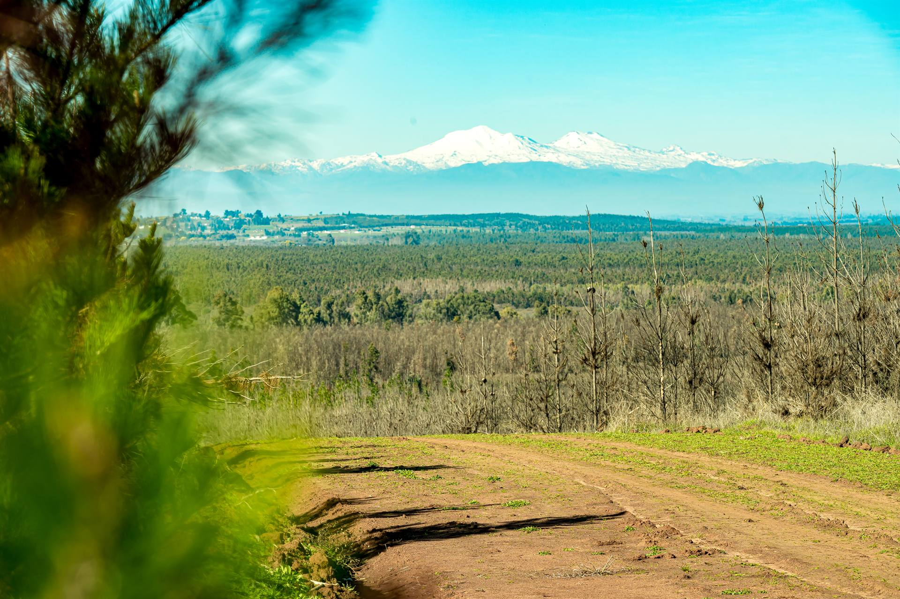
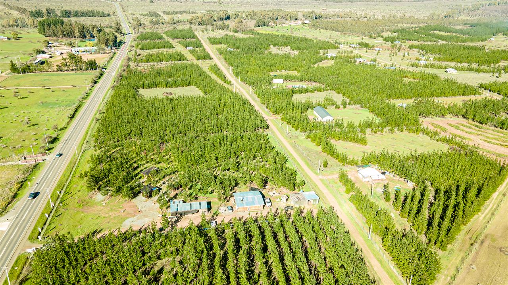
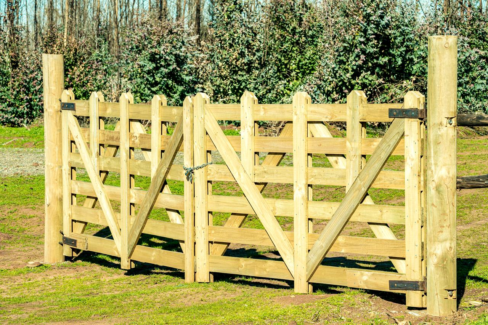
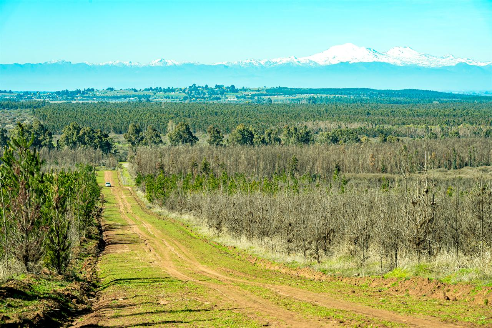
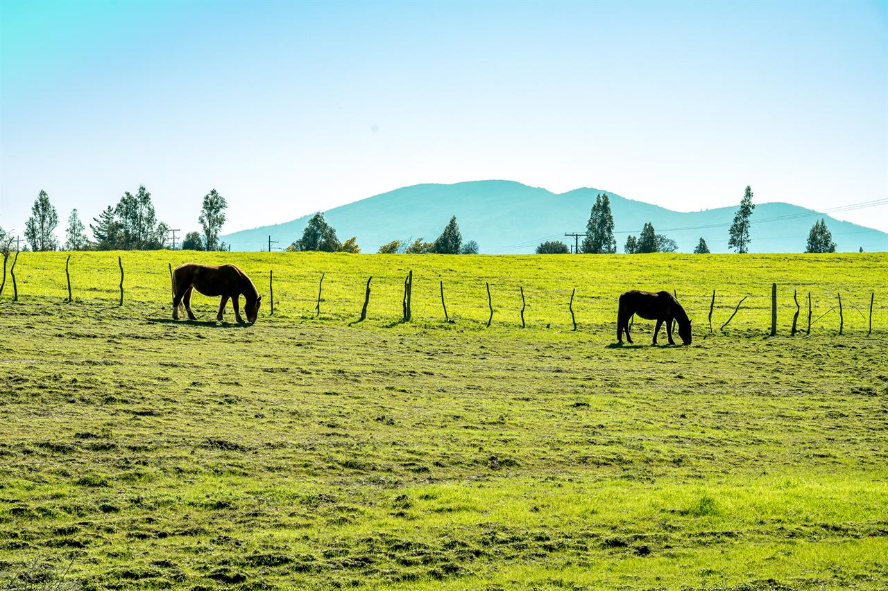
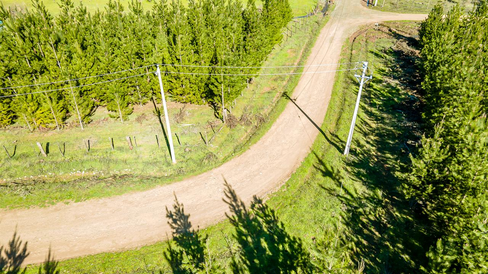
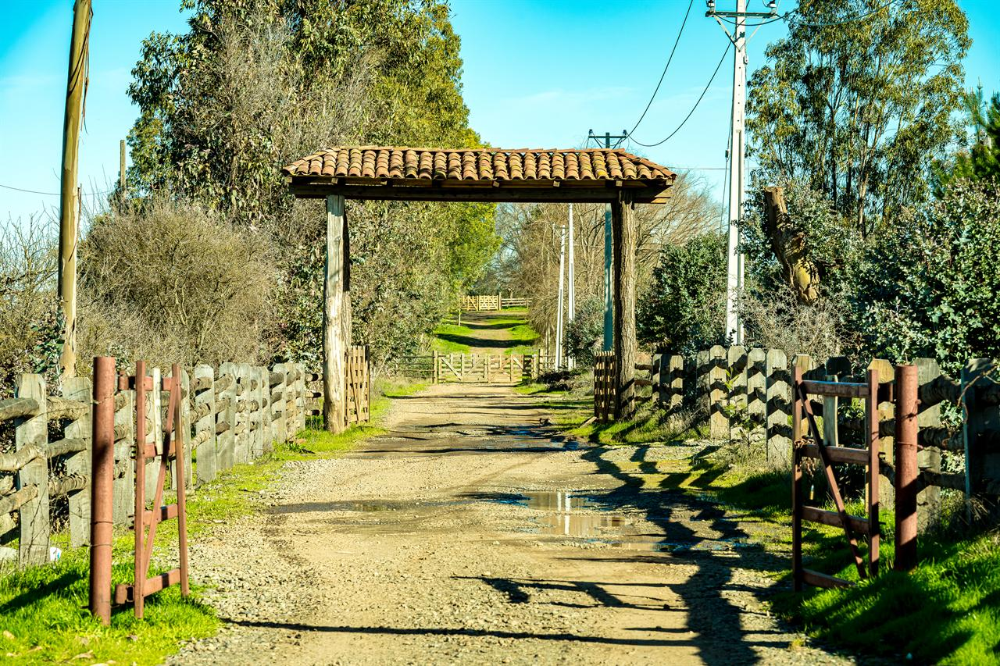
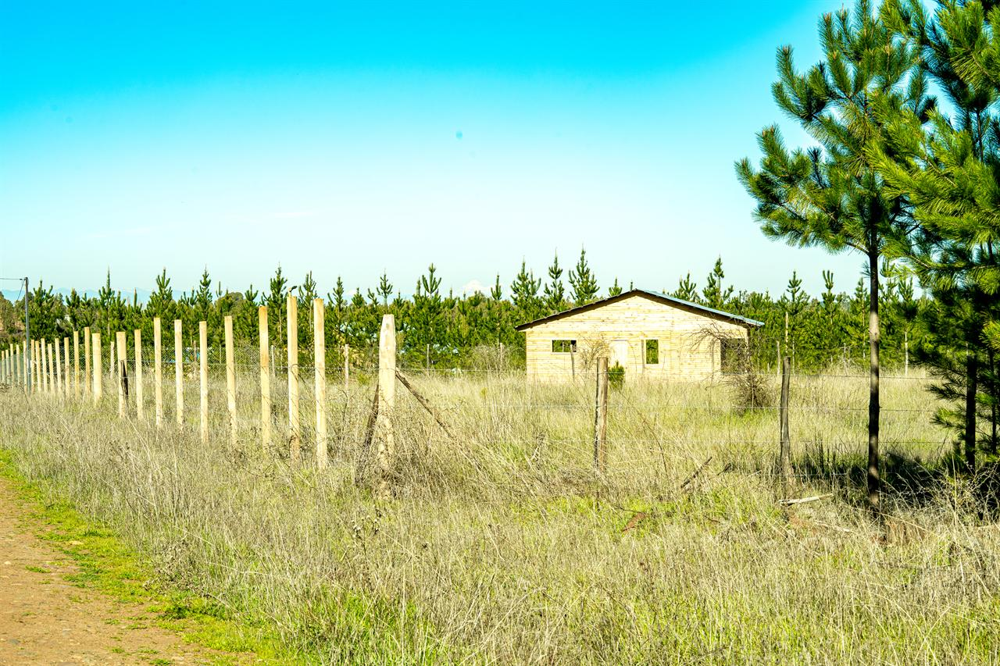

Vista a la cordillera
Amaneceres sobre los Andes y el volcán nevado en invierno. Un paisaje que no tiene precio.

Parcelas de 5.000 m² con rol propio en el sector Las Lajuelas, con vista a la cordillera y excelente conectividad con Chillán. Construye tu casa, tu refugio de fin de semana o tu inversión.
Los Olivos es un loteo de parcelas rústicas en la comuna de San Nicolás, una de las zonas con mayor proyección de la Región de Ñuble. Tranquilidad rural, aire limpio y la cordillera en el horizonte, con Chillán y la Ruta 5 a la mano.
Fotos reales del loteo en el sector Las Lajuelas, San Nicolás.







Comprar una parcela es una decisión grande. Por eso te lo hacemos simple, transparente y con todos los papeles en regla.
Amaneceres sobre los Andes y el volcán nevado en invierno. Un paisaje que no tiene precio.
San Nicolás está entre Chillán y San Carlos, un eje en pleno crecimiento residencial.
Puedes levantar la vivienda del propietario con permiso de la DOM. Te orientamos en el trámite.
Factibilidad eléctrica en el sector y alternativas de agua (pozo o APR). Revisamos cada caso contigo.
Pie y cuotas fijas directas con nosotros. Sin evaluación bancaria ni letra chica.
Rol propio, plano aprobado e inscripción en el Conservador. Revisa todo con tu abogado.
Toca un lote para ver su superficie, precio y disponibilidad en tiempo real.
Te acompañamos desde la primera visita hasta que la parcela queda inscrita a tu nombre.
Agenda por WhatsApp y te mostramos los lotes disponibles en persona, cualquier día.
Con un monto de reserva bloqueamos tu parcela mientras revisas los documentos.
Definimos forma de pago: contado o pie + cuotas. Todo por escrito y ante notario.
Firmas la escritura y la parcela se inscribe a tu nombre en el Conservador.
Mueve los controles y descubre cuánto pagarías al mes por tu parcela. Sin bancos, sin evaluación comercial.
Simulación referencial sin intereses. Las condiciones finales se informan al reservar.
Enviar esta simulación por WhatsAppEn el corazón del valle de Ñuble, entre Chillán y San Carlos. Campo de verdad, con los servicios de la ciudad a pocos minutos.
Tiempos aproximados en auto.
Cómo llegar en Google MapsSí. Cada parcela de 5.000 m² cuenta con rol propio y subdivisión aprobada conforme al Decreto Ley 3.516. Se escritura e inscribe a tu nombre en el Conservador de Bienes Raíces. Lee más en nuestra guía para comprar una parcela en Chile.
Sí. En predios rústicos se puede construir la vivienda del propietario según el artículo 55 de la Ley General de Urbanismo y Construcciones, tramitando el permiso de edificación en la Dirección de Obras Municipales de San Nicolás.
El sector cuenta con factibilidad eléctrica y existen alternativas de agua como pozo profundo o conexión a APR, según el lote. Te explicamos todo en el artículo agua y luz en parcelas: qué revisar antes de comprar.
Puedes pagar al contado con precio preferente, o con pie y cuotas fijas directas con nosotros, sin crédito hipotecario ni evaluación bancaria. Usa el simulador para calcular tu cuota.
¡Claro! Recibimos visitas todos los días, incluidos sábados y domingos. Escríbenos al +56 9 4274 4145 y coordinamos.
Escritura pública de compraventa, inscripción de dominio vigente en el Conservador de Bienes Raíces, plano de subdivisión aprobado y certificado de rol de avalúo del SII.
Tu opinión ayuda a otras familias a encontrar su parcela. Déjanos una reseña en Google.
Todo lo que necesitas saber antes de invertir en un terreno en el campo.
Documentos, rol propio, DL 3.516 y todo lo que tienes que revisar antes de firmar.
Por qué cada vez más familias eligen San Nicolás para construir su casa de campo.
Pozos, derechos de agua, APR y empalme eléctrico explicados de forma simple.
Déjanos tus datos y te contactamos hoy mismo. También puedes escribirnos directo por WhatsApp.
Estamos abriendo WhatsApp para que termines tu consulta.